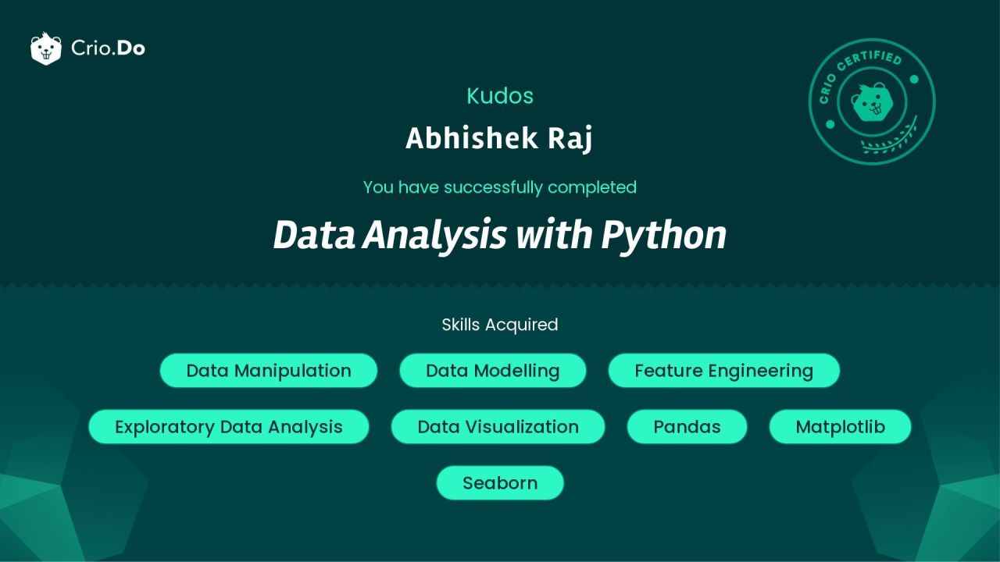

Certificates & Awards

Intermediate Python - Crio.Do

Excel Foundations - Crio.Do

SQL Foundations - Crio.Do

Data Analysis with Python - Crio.Do

Python for Data Science - Great Learning
Data Analyst | Python | SQL | Power BI
Download Resume View ProjectsI am a passionate Data Analyst with a strong foundation in Python, SQL, and data visualization. I specialize in transforming raw data into meaningful insights that help businesses make smarter decisions. With hands-on experience in tools like Power BI, Excel, and Tableau, I enjoy solving real-world problems through data-driven approaches.
Currently, I am expanding my skills in advanced analytics and working on projects that involve data cleaning, dashboard creation, and business analysis. Coming from a sales background, I bring a unique perspective in understanding customer behavior and business needs.
I am actively seeking opportunities where I can contribute, learn, and grow as a data professional.
Used Python to clean raw datasets, handle missing values, prepare columns, and make the data ready for analysis in projects like Uber Ride Analytics and Health Data Analysis.
Worked with structured data to filter records, check patterns, and understand customer or business behavior before building final reports and dashboards.
Created dashboards to explain project insights clearly, including health trends, customer attrition, BMI analysis, and ride-demand patterns.
Connected analysis with business needs by summarizing findings, explaining trends, and turning project results into clear recommendations.
Aug 2024 - May 2025
Jun 2025 - Present
Analyzed healthcare data and built dashboards for better resource allocation.
Analyzed around 6,945 rides to identify peak demand and trends using Python.
Analyzed 9000+ records to identify churn patterns and improve retention.
View More Projects
Intermediate Python - Crio.Do
Excel Foundations - Crio.Do
SQL Foundations - Crio.Do

Data Analysis with Python - Crio.Do
Python for Data Science - Great Learning